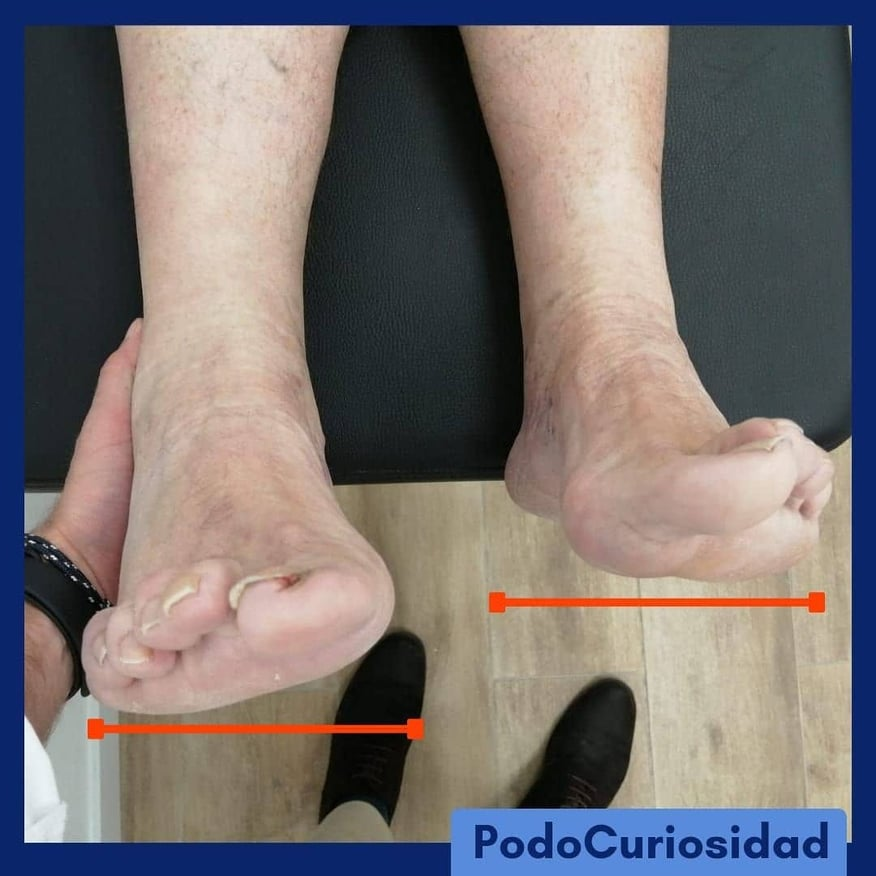
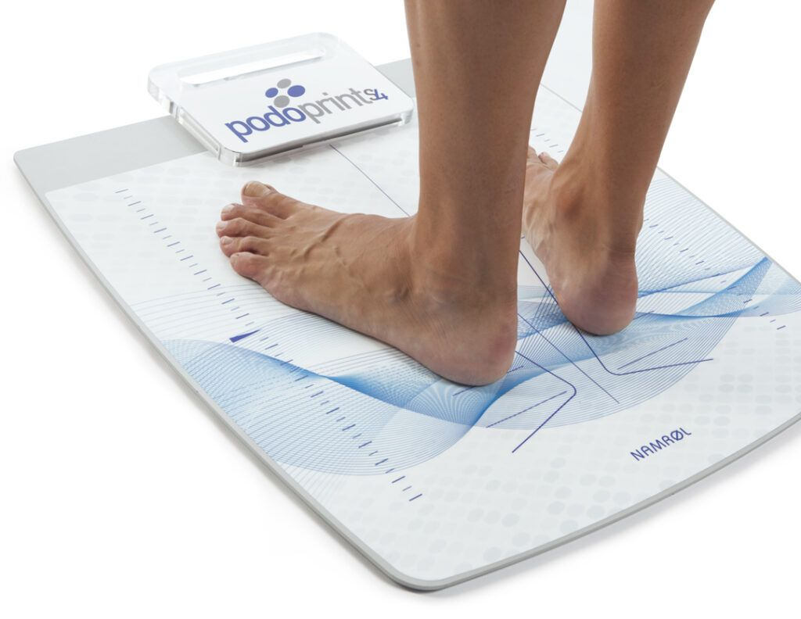

Dismetría quiere decir diferente medida. Utilizamos el término dismetría de las extremidades inferiores cuando una extremidad inferior es más larga que la otra. Esta diferencia puede encontrarse en el muslo, en la pierna, en el pie o en todos ellos.

Un 10 % de la población tiene una extremidad más larga sin que exista una causa que lo provoque. En estos casos las diferencias de longitud son pequeñas (normalmente menores de un centímetro) y consideramos que son parte de las diferencias normales entre un lado y otro del cuerpo.
Sin embargo, en ocasiones existen enfermedades que pueden provocar un crecimiento desigual de las extremidades. Encontramos malformaciones congénitas (incurvación posteromedial de tibia, deficiencia femoral o peroneal), síndromes (hemihipertrofia, Proteus, Klippel-Trenaunay), secuelas de traumatismos (lesión de las zonas de crecimiento, antecedentes de catéteres femorales), algunas enfermedades propias de la infancia (enfermedad de Perthes, pie equinovaro) o incluso problemas musculares que pueden producir acortamientos asimétricos.

Depende de la magnitud. Diferencias por debajo de medio centímetro no provocan problemas ortopédicos habitualmente. Diferencias hasta un centímetro son consideradas normales en el adulto, aunque en el niño pequeño representan proporcionalmente más alteración y en ocasiones requieren tratamiento.
Diferencias mayores provocarán un desequilibrio pélvico, un nacimiento oblicuo de la columna y una desviación compensatoria de la columna que llamamos actitud escoliótica.
Diferencias por debajo de un centímetro que no provoquen actitud escoliótica sólo requieren control periódico para comprobar que la diferencia es estable y no aumenta con la edad.